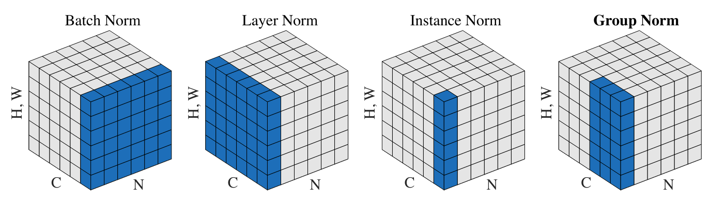

Batch Normalization#
Batch Normalization (or batch normalization) was introduced in 2015 in the paper Batch Normalization: Accelerating Deep Network Training by Reducing Internal Covariate Shift. It had a major impact in the field of Deep Learning. Today, normalization is almost systematically used, whether it is BatchNorm, LayerNorm, or GroupNorm (and others).
The idea behind BatchNorm is simple and related to the previous notebook. We aim to obtain preactivations following a Gaussian distribution at each layer of the network. We saw that good initialization allows this behavior, but it is not always easy, especially with many different layers.
BatchNorm normalizes the preactivations with respect to the batch dimension before passing them into the activation functions. This ensures a Gaussian distribution at each step.
This normalization does not affect optimization as it is a differentiable function.
Implementation#
Code Review#
We will review the code from the previous notebook to implement batch normalization.
import torch
import torch.nn.functional as F
%matplotlib inline
words = open('../05_NLP/prenoms.txt', 'r').read().splitlines()
chars = sorted(list(set(''.join(words))))
stoi = {s:i+1 for i,s in enumerate(chars)}
stoi['.'] = 0
itos = {i:s for s,i in stoi.items()}
block_size = 3 # Contexte
def build_dataset(words):
X, Y = [], []
for w in words:
context = [0] * block_size
for ch in w + '.':
ix = stoi[ch]
X.append(context)
Y.append(ix)
context = context[1:] + [ix]
X = torch.tensor(X)
Y = torch.tensor(Y)
print(X.shape, Y.shape)
return X, Y
import random
random.seed(42)
random.shuffle(words)
n1 = int(0.8*len(words))
n2 = int(0.9*len(words))
Xtr, Ytr = build_dataset(words[:n1]) # 80%
Xdev, Ydev = build_dataset(words[n1:n2]) # 10%
Xte, Yte = build_dataset(words[n2:]) # 10%
torch.Size([180834, 3]) torch.Size([180834])
torch.Size([22852, 3]) torch.Size([22852])
torch.Size([22639, 3]) torch.Size([22639])
embed_dim=10 # Dimension de l'embedding de C
hidden_dim=200 # Dimension de la couche cachée
C = torch.randn((46, embed_dim))
W1 = torch.randn((block_size*embed_dim, hidden_dim))*0.01 # On initialise les poids à une petite valeur
b1 = torch.randn(hidden_dim) *0 # On initialise les biais à 0
W2 = torch.randn((hidden_dim, 46))*0.01
b2 = torch.randn(46)*0
parameters = [C, W1, b1, W2, b2]
for p in parameters:
p.requires_grad = True
Here is our forward propagation code:
batch_size = 32
ix = torch.randint(0, Xtr.shape[0], (batch_size,))
# Forward
Xb, Yb = Xtr[ix], Ytr[ix]
emb = C[Xb]
embcat = emb.view(emb.shape[0], -1)
hpreact = embcat @ W1 + b1
h = torch.tanh(hpreact)
logits = h @ W2 + b2
loss = F.cross_entropy(logits, Yb)
Implementing BatchNorm#
According to the article, here is the information:

First, we need to normalize.
To do this, we calculate the mean and standard deviation of hpreact and then normalize using these values:
epsilon=1e-6
hpreact_mean = hpreact.mean(dim=0, keepdim=True)
hpreact_std= hpreact.std(dim=0, keepdim=True)
hpreact_norm = (hpreact - hpreact_mean) / (hpreact_std+epsilon)
We can now integrate this normalization into the forward propagation.
C = torch.randn((46, embed_dim))
W1 = torch.randn((block_size*embed_dim, hidden_dim))*0.01 # On initialise les poids à une petite valeur
b1 = torch.randn(hidden_dim) *0 # On initialise les biais à 0
W2 = torch.randn((hidden_dim, 46))*0.01
b2 = torch.randn(46)*0
# Paramètres de batch normalization
bngain = torch.ones((1, hidden_dim))
bnbias = torch.zeros((1, hidden_dim))
parameters = [C, W1, b1, W2, b2, bngain, bnbias]
for p in parameters:
p.requires_grad = True
And in forward propagation, we will have:
batch_size = 32
ix = torch.randint(0, Xtr.shape[0], (batch_size,))
# Forward
Xb, Yb = Xtr[ix], Ytr[ix]
emb = C[Xb]
embcat = emb.view(emb.shape[0], -1)
hpreact = embcat @ W1 + b1
# Batch normalization
bnmean = hpreact.mean(0, keepdim=True)
bnstd = hpreact.std(0, keepdim=True)
hpreact = bngain * (hpreact - bnmean) / bnstd + bnbias
h = torch.tanh(hpreact)
logits = h @ W2 + b2
loss = F.cross_entropy(logits, Yb)
The Problem with Batch Normalization#
Upon reflection, we can identify potential issues related to BatchNorm:
An example is affected by other elements in the batch: Normalizing along the batch dimension means that the values of each example within the batch are influenced by other examples. This might seem problematic, but in practice, it’s actually a good thing. Using random batches at each epoch provides regularization, reducing the risk of overfitting the data. However, if you want to avoid this issue, you can use other normalization methods that do not normalize along the batch dimension. In practice, BatchNorm is still widely used because it works very well empirically.
Testing on a single element: During training, each element is influenced by other elements in its batch. However, during inference, when using the model on a single element, we can no longer apply BatchNorm. This is a problem because we want to avoid different behavior during training and inference.
To solve this problem, we have two solutions:
We can calculate the mean and variance over all elements at the end of training and use these values. In practice, we don’t want to perform an additional iteration over the entire dataset just for this, so no one does it this way.
Another solution is to update the mean and variance throughout training using an EMA (exponential moving average). At the end of training, we will have a good approximation of the mean and variance of all training elements.
In practice, we can implement it like this in Python:
C = torch.randn((46, embed_dim))
W1 = torch.randn((block_size*embed_dim, hidden_dim))*0.01 # On initialise les poids à une petite valeur
b1 = torch.randn(hidden_dim) *0 # On initialise les biais à 0
W2 = torch.randn((hidden_dim, 46))*0.01
b2 = torch.randn(46)*0
# Paramètres de batch normalization
bngain = torch.ones((1, hidden_dim))
bnbias = torch.zeros((1, hidden_dim))
bnmean_running = torch.zeros((1, hidden_dim))
bnstd_running = torch.ones((1, hidden_dim))
parameters = [C, W1, b1, W2, b2, bngain, bnbias]
for p in parameters:
p.requires_grad = True
batch_size = 32
ix = torch.randint(0, Xtr.shape[0], (batch_size,))
# Forward
Xb, Yb = Xtr[ix], Ytr[ix]
emb = C[Xb]
embcat = emb.view(emb.shape[0], -1)
hpreact = embcat @ W1 + b1
# Batch normalization
bnmeani = hpreact.mean(0, keepdim=True)
bnstdi = hpreact.std(0, keepdim=True)
hpreact = bngain * (hpreact - bnmeani) / bnstdi + bnbias
with torch.no_grad(): # On ne veut pas calculer de gradient pour ces opérations
bnmean_running = 0.999 * bnmean_running + 0.001 * bnmeani
bnstd_running = 0.999 * bnstd_running + 0.001 * bnstdi
h = torch.tanh(hpreact)
logits = h @ W2 + b2
loss = F.cross_entropy(logits, Yb)
Note: In our implementation, we chose 0.001 for our EMA. In the BatchNorm layer of PyTorch, this parameter is defined by momentum and its default value is 0.1. In practice, the choice of this value depends on the size of the batch relative to the size of the training dataset. For a large batch with a small dataset, you can take 0.1, for example. For a small batch with a large dataset, we prefer a smaller value.
Let’s now test the training of our model to verify that the layer works. For this small model, we won’t see a difference in performance.
lossi = []
max_steps = 200000
for i in range(max_steps):
ix = torch.randint(0, Xtr.shape[0], (batch_size,))
Xb, Yb = Xtr[ix], Ytr[ix]
emb = C[Xb]
embcat = emb.view(emb.shape[0], -1)
hpreact = embcat @ W1 + b1
# Batch normalization
bnmeani = hpreact.mean(0, keepdim=True)
bnstdi = hpreact.std(0, keepdim=True)
hpreact = bngain * (hpreact - bnmeani) / bnstdi + bnbias
with torch.no_grad(): # On ne veut pas calculer de gradient pour ces opérations
bnmean_running = 0.999 * bnmean_running + 0.001 * bnmeani
bnstd_running = 0.999 * bnstd_running + 0.001 * bnstdi
h = torch.tanh(hpreact)
logits = h @ W2 + b2
loss = F.cross_entropy(logits, Yb)
for p in parameters:
p.grad = None
loss.backward()
lr = 0.1 if i < 100000 else 0.01
for p in parameters:
p.data += -lr * p.grad
if i % 10000 == 0:
print(f'{i:7d}/{max_steps:7d}: {loss.item():.4f}')
lossi.append(loss.log10().item())
0/ 200000: 3.8241
10000/ 200000: 1.9756
20000/ 200000: 2.7151
30000/ 200000: 2.3287
40000/ 200000: 2.1411
50000/ 200000: 2.3207
60000/ 200000: 2.3250
70000/ 200000: 2.0320
80000/ 200000: 2.0615
90000/ 200000: 2.2468
100000/ 200000: 2.2081
110000/ 200000: 2.1418
120000/ 200000: 1.9665
130000/ 200000: 1.8572
140000/ 200000: 2.0577
150000/ 200000: 2.1804
160000/ 200000: 1.8604
170000/ 200000: 1.9810
180000/ 200000: 1.8228
190000/ 200000: 1.9977
Additional Considerations#
Bias: Batch norm normalizes the preactivations of the weights. This normalization cancels out the bias (since it shifts the distribution, while we recentre it). When using BatchNorm, we can do without the bias. In practice, if you leave a bias, it’s not a problem, but it’s a network parameter that will be unnecessary.
Placement of BatchNorm: Based on what we’ve seen, it makes sense to place BatchNorm before the activation function. In practice, some prefer to place it after the activation layer, so don’t be surprised if you encounter this in the literature or in code.
Other Normalizations#
We will quickly review other normalizations used for training neural networks.

Figure extracted from the article
Layer Normalization: This normalization layer is also very frequently used, especially in language models (GPT, Llama). It involves normalizing across all activations of the layer rather than along the batch axis. In our implementation, this would simply mean changing:
# Batch normalization
bnmeani = hpreact.mean(0, keepdim=True)
bnstdi = hpreact.std(0, keepdim=True)
# Layer normalization
bnmeani = hpreact.mean(1, keepdim=True)
bnstdi = hpreact.std(1, keepdim=True)
Instance Normalization: This layer normalizes activations on each channel of each element independently.
Group Normalization: This layer is a kind of fusion between LayerNorm and InstanceNorm, as normalization is calculated on groups of channels (if the size of a group is 1, it’s InstanceNorm and if the size of a group is C, it’s LayerNorm)